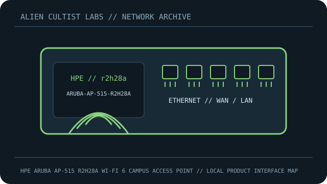

[ MODEL-SPECIFIC NETWORK HARDWARE RECORD ]
HPE Aruba AP-515 R2H28A Wi-Fi 6 Campus Access Point
Indoor AP-515 US regulatory SKU with Wi-Fi 6 and SmartRate Ethernet.

IDENTIFICATION: Confirm exact model, revision, regulatory region and product label. Link rates are manufacturer maximum PHY/link specifications, not measured payload throughput; features depend on firmware and client capability.
Model-specific specifications and compatibility
| Subcategory | Network appliances: routers & access points |
|---|---|
| Exact product/model | HPE Aruba AP-515 R2H28A Wi-Fi 6 Campus Access Point |
| Ethernet ports and rates | 1x2.5GbE SmartRate RJ-45 + 1x1GbE RJ-45; USB 2.0 host/expansion. |
| Wi-Fi bands and standards | IEEE 802.11a/b/g/n/ac/ax: 2.4GHz 2x2 574Mb/s; 5GHz 4x4 4.8Gb/s, 802.11ax. |
| Streams and nominal-rate interpretation | 6 streams (2x2 + 4x4); client/channel dependent. |
| Antenna system | Integrated internal omni-directional ceiling antennas. |
| Management, firmware and security updates | ArubaOS campus AP or supported Instant/Aruba Central; WPA3 depends on release/mode/client. Official image must match SKU/regulatory domain. |
| Power | 802.3at PoE or supported DC; 802.3af may limit features; budget up to ~20.8W and verify label/guide. |
| Compatibility | SmartRate needs compatible switch/cable. R2H28A is US SKU, unlike R2H29A/rest-of-world; match controller/country code. |
| Revision / variant | Exact R2H28A (AP-515 US); regional radio/firmware differ. |
Revision, management and deployment notes
Revision/variant: Exact R2H28A (AP-515 US); regional radio/firmware differ.
Firmware/security updates: ArubaOS campus AP or supported Instant/Aruba Central; WPA3 depends on release/mode/client. Official image must match SKU/regulatory domain.
Power: 802.3at PoE or supported DC; 802.3af may limit features; budget up to ~20.8W and verify label/guide.
Compatibility: SmartRate needs compatible switch/cable. R2H28A is US SKU, unlike R2H29A/rest-of-world; match controller/country code.
No throughput or range benchmark is claimed. For testing, record firmware, client, channel, topology and method.
Safety and preservation
Retain adapter/PoE labels and regional SKU, record firmware provenance and remove power before servicing. Do not publish credentials, serial numbers, MAC addresses or private network details.
Manufacturer sources and manuals
- Aruba AP-515 series manufacturer data sheetManufacturer specification source for the model.
- Aruba AP-515 official installation guideOfficial manufacturer support, firmware, installation or manual resource.
Use exact model/revision and purchase-region documentation for firmware and regulatory decisions.